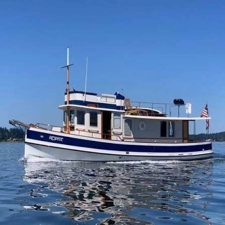

B-Atlas Boat Guide · GOZZ-40-PI
Gozzard Pilgrim 40 Gozzard / North Castle Motor Yacht
1983–1989
The Gozzard Pilgrim 40 is a Canadian full-displacement motor yacht designed by H. Ted Gozzard for slow canal, ICW and coastal cruising. Its raised pilothouse, full keel, single diesel and unusually generous water capacity emphasize protected sightseeing and liveaboard comfort rather than speed.

- Length
- 40 ft
- Beam
- 14 ft
- Draft
- 3.25 ft
- Hull behaviour
- Displacement
- Fuel
- Diesel
- Propulsion
- Shaft
- Engine configuration
- Single approximately 100 hp diesel inboard
- Boat family
- Cruiser
- Construction
- Fiberglass
Best for
- Couples cruising canals, rivers, Great Lakes and the ICW
- Owners who value traditional styling and protected steering
- Slow-cruising buyers prioritizing comfort over speed
Trade-offs
- Slow cruising speed is fundamental to the design
- Large 14-foot beam limits some marina and transport options
- Small production run means model-specific parts and documentation can require owner-network research
Known concerns
- No model-specific concern has been promoted to B-Atlas’s evidence threshold. This does not mean the model has no age-, condition- or hull-specific risks.
Inspection focus
- Verify hull, deck and structural moisture or damage appropriate to the construction method
- Inspect propulsion machinery, cooling, exhaust, shaft or saildrive installations and service history
- Review steering systems, through-hulls, electrical systems and tankage
- Confirm actual dimensions, tank capacities and equipment against the individual hull
Continue researching
Related boat models
Cruisers Yachts 390 Sports Coupe Sports Coupe
40.17 ft · Planing
Fjord 40 Cruiser Enclosed Cruiser
39.34 ft · Planing
Fjord 40 Open Walkaround Day Cruiser
39.34 ft · Planing
Cruisers Yachts 3650 / 3750 / 375 Motor Yacht Aft Cabin Motor Yacht
40.83 ft · Planing
Nimbus 365 Coupé Sidewalk Coupé Cruiser
37.92 ft · Semi-Displacement
Cutwater C-32 CB Command Bridge
37.67 ft · Semi-Displacement
About this record
B-Atlas preserves uncertainty: missing information remains unknown rather than being treated as a negative. Specifications and guidance describe the model record; individual boats can differ by year, equipment, refit and condition.